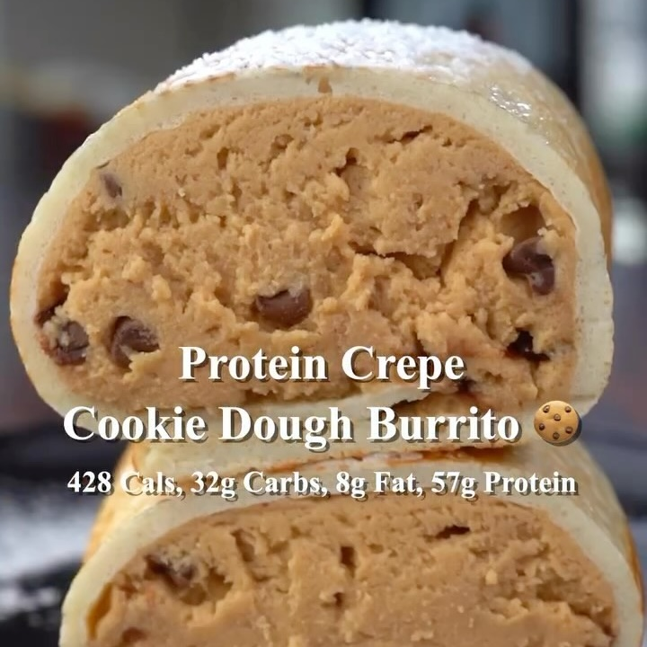

Burrito de Cookie Dough
Ingredientes:
- 15 g de proteína en polvo de vainilla (mezcla de suero/caseína)
- 15 g de harina de uso general
- 3 g de edulcorante sin calorías
- Un pellizco de sal marina
- 80 g de claras de huevo
Para la Masa de Galleta Proteica:
- 30 g de proteína en polvo vegana de vainilla
- 15 g de polvo para galletas de proteína PB Party
- 8 g de mantequilla de maní en polvo
- 4 g de edulcorante sin calorías
- Un pequeño pellizco de sal marina
- 15 g de chispas de chocolate miniatura
Instrucciones:
- Añade todos los ingredientes secos para la masa de galleta (excepto las chispas de chocolate
miniatura) en un bol y mezcla para evitar grumos. Luego, agrega lentamente agua fría y mezcla hasta
obtener una consistencia similar a la masa de galleta. Añade las chispas de chocolate miniatura y
mezcla bien. Lleva la masa al congelador.
- Añade todos los ingredientes secos para la crepa en un bol y mezcla para evitar grumos. Luego,
agrega las claras de huevo y mezcla hasta obtener una masa suave.
- Agrega la masa para crepas al centro de una sartén precalentada a fuego medio (5/10). Gira la sartén
en círculos para hacer la crepe lo más grande y delgada posible. Cocina por ese lado hasta que
comiencen a formarse burbujas en la parte superior, esto debería tomar de 1 a 2 minutos. Voltea y
cocina por el otro lado durante un minuto.
- Retira la crepe de la sartén y añade la masa de galleta encima. Enrolla la crepe como un burrito.
Vuelve a colocarla en la sartén y cocina cada lado hasta dorar. Luego, corta y ¡disfruta!